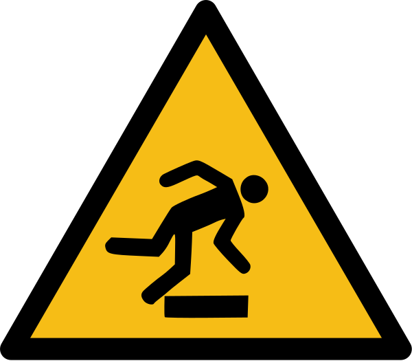
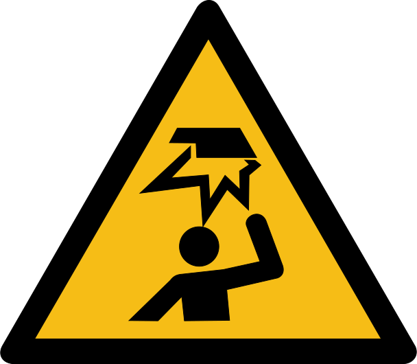

Prof. Dr. E. Harms
Betriebsanweisung
für das Arbeiten in der
Robotik
Robotik
Stand: 5. Mai 2021
Hermann Höhne, MSc.
Stand: 5. Mai 2021
Hermann Höhne, MSc.
Gefahren für Mensch und Umwelt


- Gefahr durch sich bewegende Werkzeugmaschinen.
- Gefahr des Rutschens auf den Kacheln des Parcours.
Schutzmaßnahmen und Verhaltensregeln

- Niemals alleine im Labor arbeiten.
- Es ist immer nur ein Großgerät zur Zeit zu betreiben.
- Jeder Arbeitende darf nur Tätigkeiten ausführen oder Geräte verwenden, für welche er hinreichend geschult ist.
- Die individuellen Betriebsanweisungen für Geräte sind zu beachten. Gegebenenfalls ist die Bedienungsanleitung zu lesen oder die Aufsicht um Rat fragen.
- Werkzeuge sind nach dem Gebrauch an ihren Platz zurückzulegen.
- Schmuck, welcher sich in beweglichen Maschinenteilen verfangen oder Kurzschlüsse herstellen kann, ist abzulegen (insbesondere Ketten).
- Selbst-entworfene elektrische Geräte sind mit Vorsicht zu betreiben. Nur Niedervoltanwendungen sind gestattet.
- Speisen und Getränke sind verboten. Ausnahme ist Wasser in geschlossenen Behältern.
- Nach der Arbeit die Spannungsversorgung mit Hilfe des Not-Aus-Systems abschalten.
- Über den Parcours nur langsam gehen und mit ganzem Fuß auftreten.
Verhalten bei Störung und im Gefahrenfall
- Bei mangelndem Fachwissen zur Handhabung von Geräten: Aufsicht fragen.
- Bei beschädigten oder fehlenden Schutzvorrichtungen: Aufsicht informieren.
- Schäden oder Mängel nur vom Fachmann beseitigen lassen.
- Arbeit bis zur Beseitigung des Mangels aus Sicherheitsgründen einstellen.
- Nach dem Auslösen des Fehlerstrom-Schutzschalters ist vor dem Rücksetzen der Sicherung zuerst die Quelle der Störung zu identifizieren.
Verhalten bei Unfällen – Erste Hilfe
- Not-Aus verwenden, Maschinen abschalten, Arbeitsplätze sichern.
- Ersthelfer informieren.
- Verletzten betreuen.
Krankenhaus: Asklepios Westklinikum 040-81910
Ersthelfer: 04103-8048-912